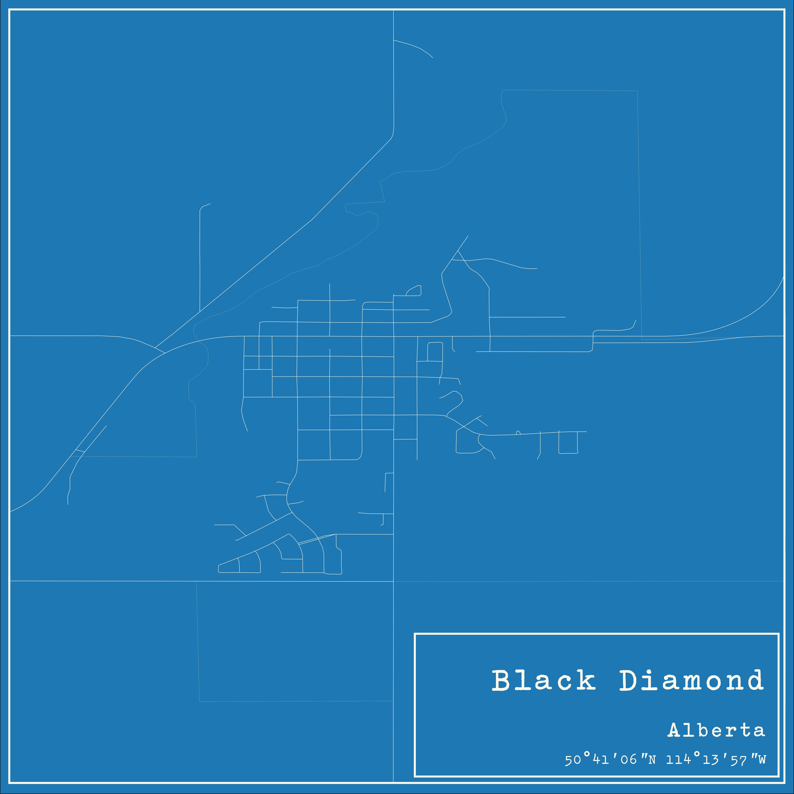
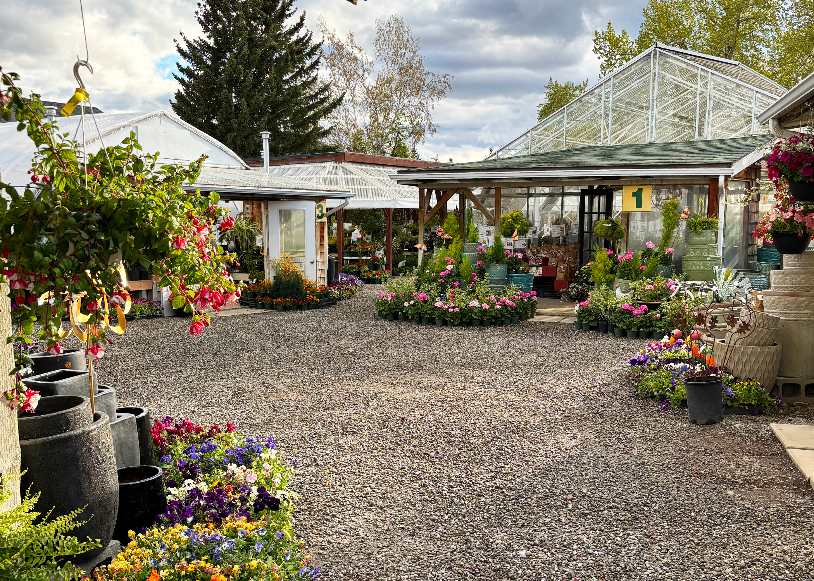

About Vale's Greenhouse

Founder of Vale’s Greenhouse, Anne lived in Shropshire, England until she made her way to Canada in 1961 and became a proud Canadian. She found her calling here, and it was a perfect match. She had a pioneering spirit and knew she wanted to own a business. In 1976, she began operating a small greenhouse, and in her first year, she grew roughly 2000 bedding plants that sold out in only 10 days. The business grew over the next few years, and Anne became known as an expert in plants.
Anne’s goddaughter, Katrina D., came to work with Anne in 1990. Katrina grew up on a family farm new Black Diamond, so she had lots of experience in horticulture. Her time at the greenhouse was supplemented by her growing business in landscaping. Once her family began to grow in numbers, she knew she needed to make a change. She then stopped the landscaping business and spent all summer at the greenhouse.

Anne retired in 2004 and left the greenhouse in Katrina’s competent hands. Anne enjoyed her personal garden until her passing in 2019 and helped rewrite the best-selling book, Gardening Under the Arch. After taking over the growing business, Katrina has served countless happy customers in the Southern Alberta area. She’s dedicated herself to making a name for herself in the gardening world. Her hard work and enthusiasm have shaped Vale’s Greenhouse into what it is today.